Aqui estan las cien salas del cartucho, una a una. Veinticinco niveles de cuatro salas cada uno, y ninguna se repite: comparadas casilla a casilla las cien, salen cien distintas. Todas dibujadas desde los bytes de la ROM, ni una captura.
Cada sala son 32x20 casillas que salen de ochenta bytes apuntando a bloques de 8x4, se descomprimen, y encima se planta —en el sitio exacto en el que el cartucho la planta— cada cosa de las dos listas del nivel: las jaulas, las puertas, los peligros, los bichos y el objeto escondido.
Las 64.000 casillas que salen de aqui caben en 2.983 bytes del cartucho. Como, esta contado en El codigo.
Debajo de cada sala va lo que lleva encima, contado recorriendo las listas con las mismas reglas que usa el Z80. Los rotulos estan escritos con la fuente del propio cartucho.
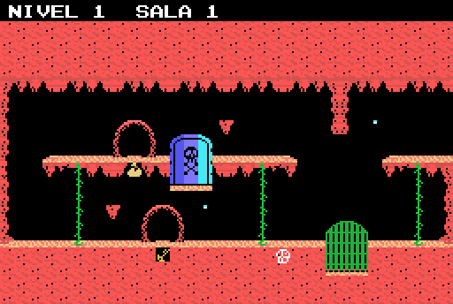
Nivel 1, sala 1. Lleva: 2 estalactita, 2 gotera, 1 trasto, 1 jaula, 1 objeto, 1 puerta, 1 calavera.
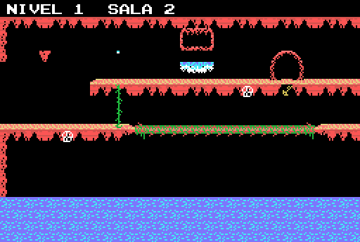
Nivel 1, sala 2. Lleva: 2 calavera, 1 estalactita, 1 trasto, 1 agua, 1 gotera.
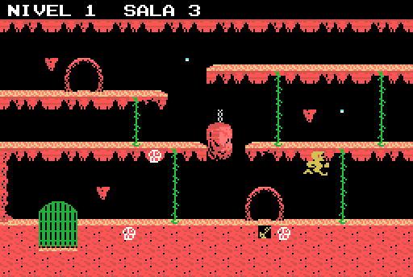
Nivel 1, sala 3. Lleva: 3 estalactita, 3 calavera, 2 gotera, 1 perseguidor, 1 trasto, 1 jaula, 1 bola de piedra.
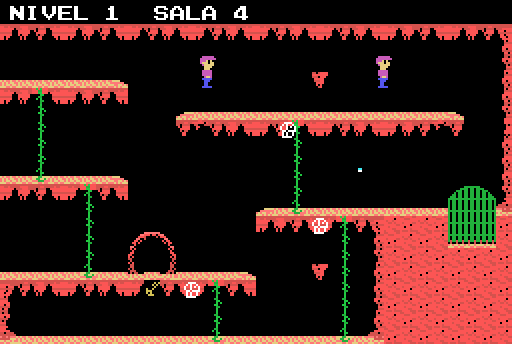
Nivel 1, sala 4. Lleva: 3 calavera, 2 estalactita, 2 puerta al nivel, 1 trasto, 1 jaula, 1 gotera.
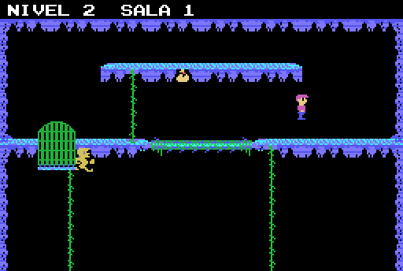
Nivel 2, sala 1. Lleva: 1 perseguidor, 1 puerta al nivel, 1 jaula, 1 objeto.
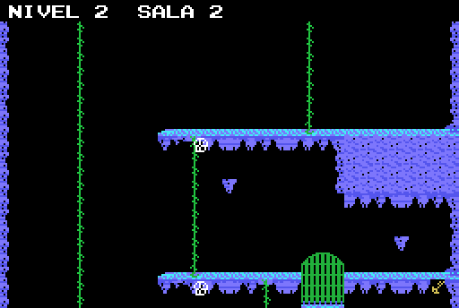
Nivel 2, sala 2. Lleva: 2 estalactita, 2 calavera, 1 trasto, 1 jaula.
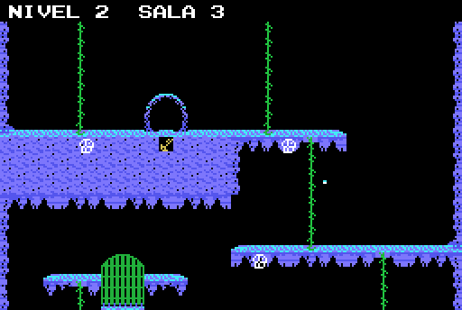
Nivel 2, sala 3. Lleva: 3 calavera, 1 trasto, 1 jaula, 1 gotera.
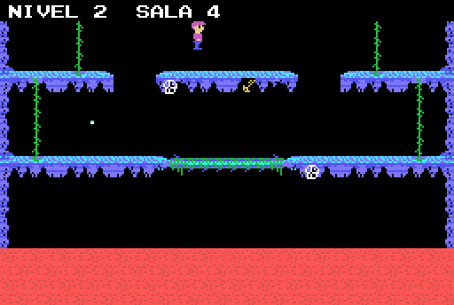
Nivel 2, sala 4. Lleva: 2 calavera, 1 puerta al nivel, 1 trasto, 1 gotera.
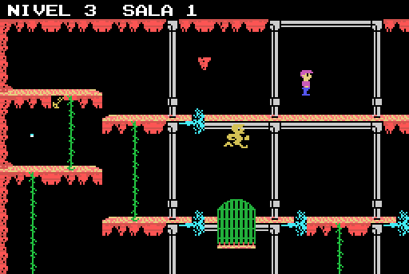
Nivel 3, sala 1. Lleva: 6 chorro del tubo, 1 estalactita, 1 perseguidor, 1 puerta al nivel, 1 trasto, 1 jaula, 1 gotera.
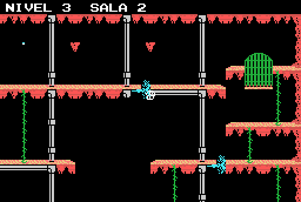
Nivel 3, sala 2. Lleva: 3 chorro del tubo, 2 estalactita, 1 jaula, 1 gotera, 1 calavera.
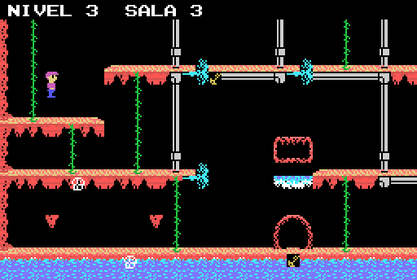
Nivel 3, sala 3. Lleva: 4 chorro del tubo, 2 estalactita, 2 trasto, 2 calavera, 1 puerta al nivel, 1 agua.
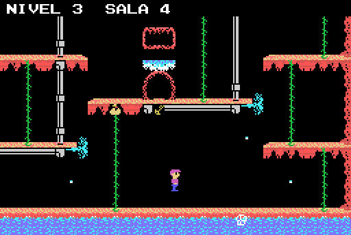
Nivel 3, sala 4. Lleva: 3 chorro del tubo, 3 gotera, 1 puerta al nivel, 1 trasto, 1 objeto, 1 agua, 1 calavera.
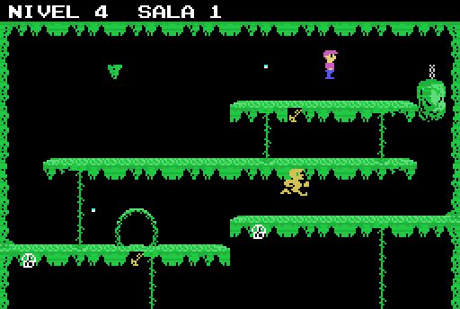
Nivel 4, sala 1. Lleva: 2 trasto, 2 gotera, 2 calavera, 1 estalactita, 1 perseguidor, 1 puerta al nivel, 1 bola de piedra.
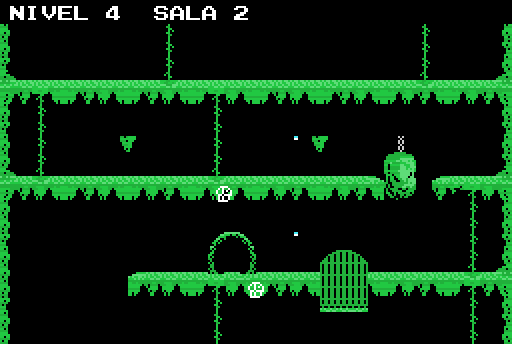
Nivel 4, sala 2. Lleva: 2 estalactita, 2 gotera, 2 calavera, 1 jaula, 1 bola de piedra.
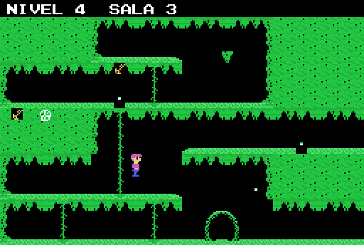
Nivel 4, sala 3. Lleva: 3 trasto, 3 gotera, 2 calavera, 1 estalactita, 1 puerta al nivel.
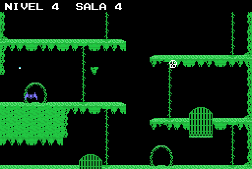
Nivel 4, sala 4. Lleva: 2 jaula, 2 calavera, 1 estalactita, 1 perseguidor, 1 objeto, 1 gotera, 1 murcielago.
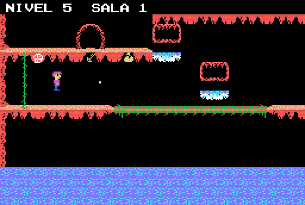
Nivel 5, sala 1. Lleva: 2 agua, 1 puerta al nivel, 1 trasto, 1 objeto, 1 gotera, 1 calavera.
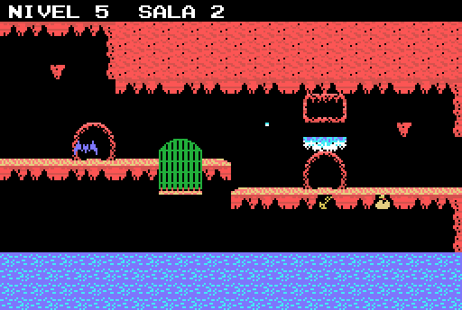
Nivel 5, sala 2. Lleva: 2 estalactita, 1 trasto, 1 jaula, 1 objeto, 1 agua, 1 gotera, 1 murcielago.
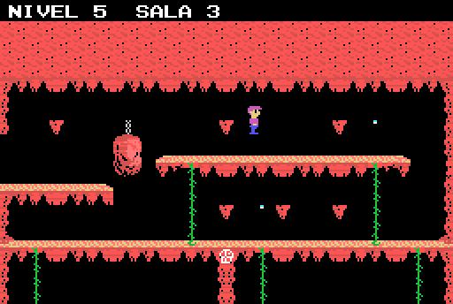
Nivel 5, sala 3. Lleva: 6 estalactita, 2 gotera, 1 puerta al nivel, 1 bola de piedra, 1 calavera.
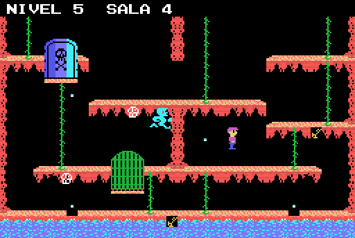
Nivel 5, sala 4. Lleva: 4 gotera, 2 trasto, 2 calavera, 1 perseguidor, 1 puerta al nivel, 1 jaula, 1 puerta.
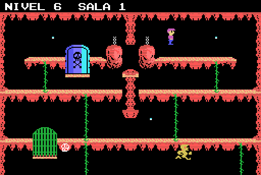
Nivel 6, sala 1. Lleva: 6 columna que crece, 3 gotera, 2 bola de piedra, 1 perseguidor, 1 puerta al nivel, 1 jaula, 1 puerta, 1 calavera.
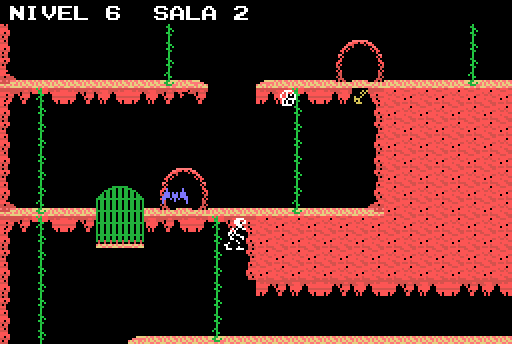
Nivel 6, sala 2. Lleva: 2 perseguidor, 2 calavera, 1 trasto, 1 jaula, 1 murcielago.
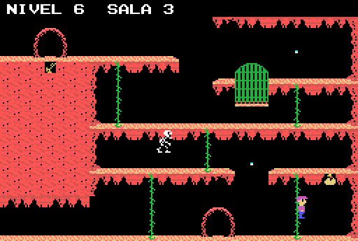
Nivel 6, sala 3. Lleva: 2 trasto, 2 gotera, 1 perseguidor, 1 puerta al nivel, 1 jaula, 1 objeto, 1 calavera.
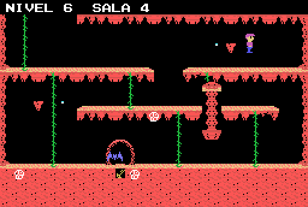
Nivel 6, sala 4. Lleva: 6 columna que crece, 3 calavera, 2 estalactita, 2 gotera, 1 puerta al nivel, 1 trasto, 1 murcielago.
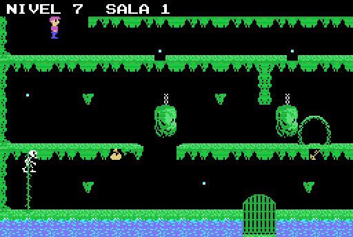
Nivel 7, sala 1. Lleva: 4 estalactita, 4 gotera, 2 bola de piedra, 1 perseguidor, 1 puerta al nivel, 1 trasto, 1 jaula, 1 objeto.
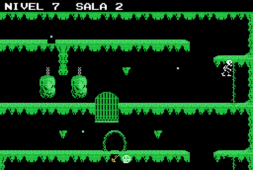
Nivel 7, sala 2. Lleva: 3 estalactita, 3 gotera, 2 bola de piedra, 1 perseguidor, 1 trasto, 1 jaula, 1 calavera.
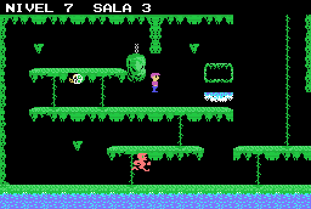
Nivel 7, sala 3. Lleva: 3 estalactita, 1 perseguidor, 1 puerta al nivel, 1 trasto, 1 agua, 1 bola de piedra, 1 calavera.
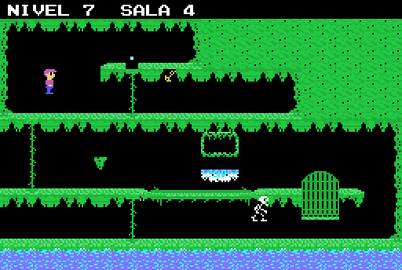
Nivel 7, sala 4. Lleva: 1 estalactita, 1 perseguidor, 1 puerta al nivel, 1 trasto, 1 jaula, 1 agua, 1 gotera.
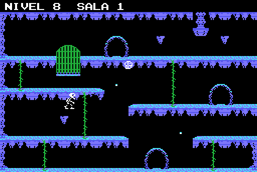
Nivel 8, sala 1. Lleva: 6 columna que crece, 3 estalactita, 2 gotera, 2 calavera, 1 perseguidor, 1 trasto, 1 jaula.
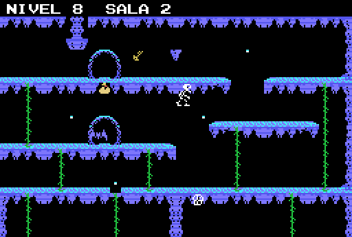
Nivel 8, sala 2. Lleva: 6 columna que crece, 4 gotera, 1 estalactita, 1 perseguidor, 1 trasto, 1 objeto, 1 calavera, 1 murcielago.
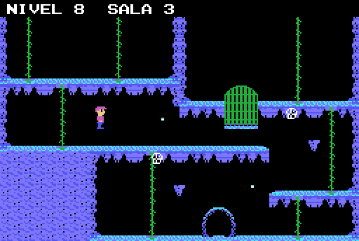
Nivel 8, sala 3. Lleva: 2 estalactita, 2 gotera, 2 calavera, 1 perseguidor, 1 puerta al nivel, 1 jaula.
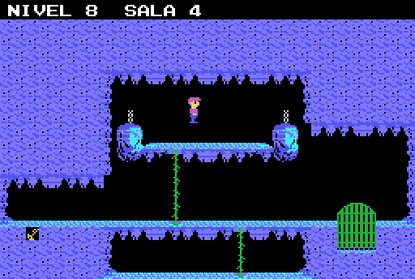
Nivel 8, sala 4. Lleva: 2 trasto, 2 bola de piedra, 1 perseguidor, 1 puerta al nivel, 1 jaula.
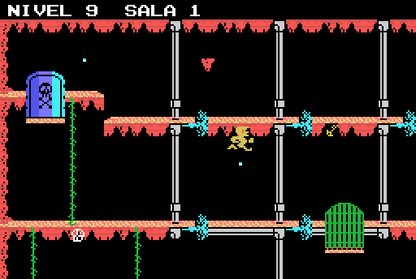
Nivel 9, sala 1. Lleva: 7 chorro del tubo, 2 gotera, 1 estalactita, 1 perseguidor, 1 trasto, 1 jaula, 1 puerta, 1 calavera.
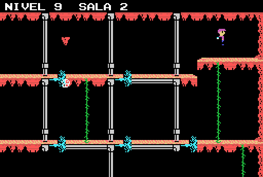
Nivel 9, sala 2. Lleva: 7 chorro del tubo, 1 estalactita, 1 puerta al nivel, 1 gotera, 1 calavera.
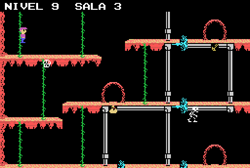
Nivel 9, sala 3. Lleva: 5 chorro del tubo, 2 trasto, 2 calavera, 1 perseguidor, 1 puerta al nivel, 1 objeto.
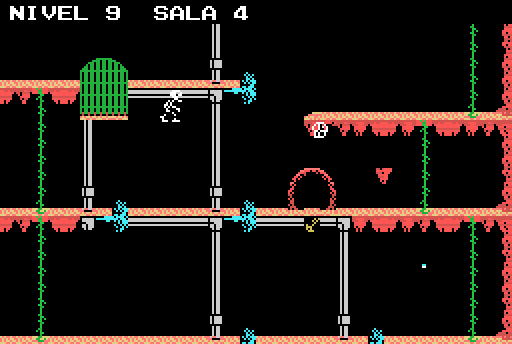
Nivel 9, sala 4. Lleva: 7 chorro del tubo, 2 perseguidor, 1 estalactita, 1 trasto, 1 jaula, 1 gotera, 1 calavera.
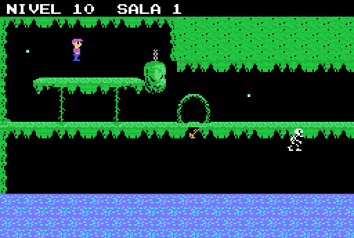
Nivel 10, sala 1. Lleva: 2 gotera, 1 perseguidor, 1 puerta al nivel, 1 trasto, 1 bola de piedra.
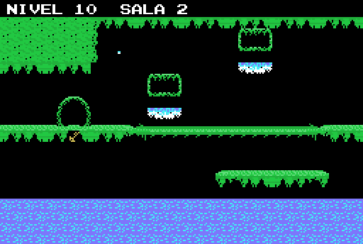
Nivel 10, sala 2. Lleva: 2 agua, 1 trasto, 1 gotera.
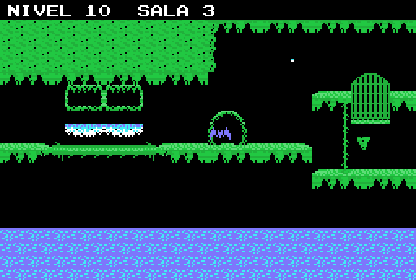
Nivel 10, sala 3. Lleva: 2 agua, 1 estalactita, 1 jaula, 1 gotera, 1 murcielago.
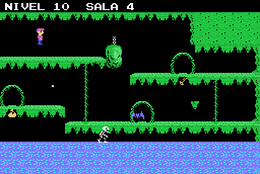
Nivel 10, sala 4. Lleva: 1 estalactita, 1 perseguidor, 1 puerta al nivel, 1 trasto, 1 objeto, 1 bola de piedra, 1 gotera, 1 murcielago.
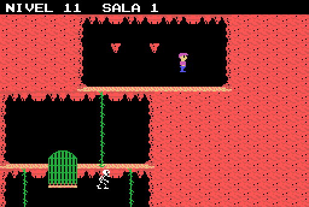
Nivel 11, sala 1. Lleva: 2 estalactita, 1 perseguidor, 1 puerta al nivel, 1 jaula.
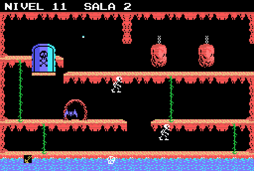
Nivel 11, sala 2. Lleva: 2 perseguidor, 2 bola de piedra, 1 trasto, 1 puerta, 1 gotera, 1 calavera, 1 murcielago.
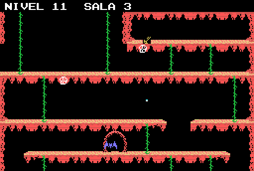
Nivel 11, sala 3. Lleva: 2 calavera, 1 trasto, 1 gotera, 1 murcielago.
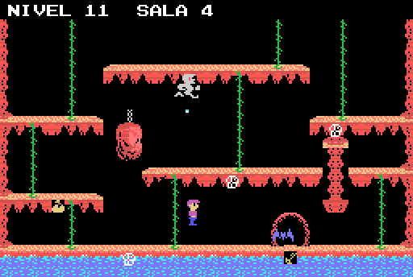
Nivel 11, sala 4. Lleva: 6 columna que crece, 3 calavera, 1 perseguidor, 1 puerta al nivel, 1 trasto, 1 objeto, 1 bola de piedra, 1 gotera, 1 murcielago.
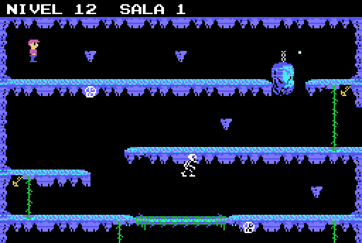
Nivel 12, sala 1. Lleva: 4 estalactita, 2 trasto, 2 calavera, 1 perseguidor, 1 puerta al nivel, 1 bola de piedra, 1 gotera.
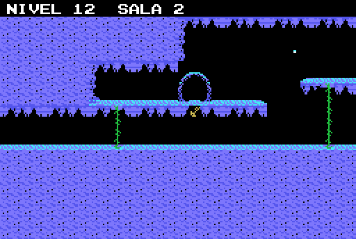
Nivel 12, sala 2. Lleva: 1 trasto, 1 gotera.
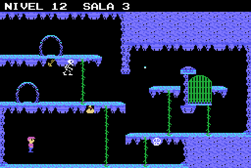
Nivel 12, sala 3. Lleva: 6 columna que crece, 1 perseguidor, 1 puerta al nivel, 1 trasto, 1 jaula, 1 objeto, 1 gotera, 1 calavera.
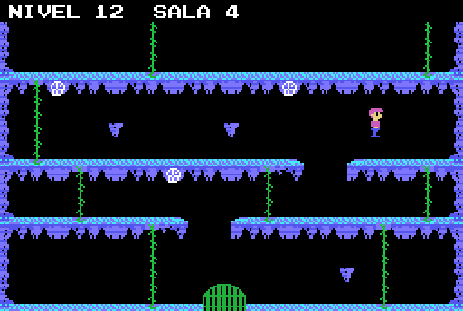
Nivel 12, sala 4. Lleva: 4 calavera, 3 estalactita, 1 perseguidor, 1 puerta al nivel, 1 jaula.
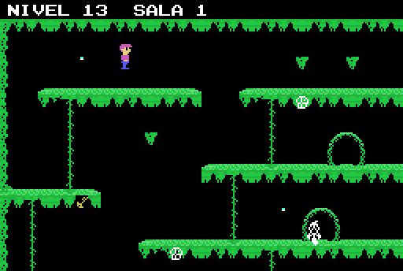
Nivel 13, sala 1. Lleva: 3 estalactita, 2 gotera, 2 calavera, 1 puerta al nivel, 1 trasto, 1 bicho de patas.
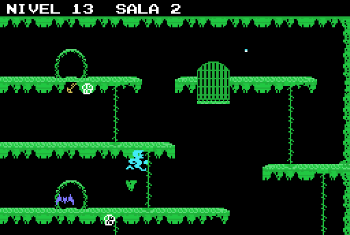
Nivel 13, sala 2. Lleva: 2 calavera, 1 estalactita, 1 perseguidor, 1 trasto, 1 jaula, 1 gotera, 1 murcielago.
Nivel 13, sala 3. Lleva: 3 estalactita, 1 perseguidor, 1 puerta al nivel, 1 trasto, 1 jaula, 1 agua, 1 gotera, 1 calavera.
Nivel 13, sala 4. Lleva: 2 estalactita, 2 gotera, 2 calavera, 1 trasto, 1 jaula, 1 objeto, 1 agua.
Nivel 14, sala 1. Lleva: 2 chorro del tubo, 1 estalactita, 1 puerta al nivel, 1 llamarada.
Nivel 14, sala 2. Lleva: 4 chorro del tubo, 1 estalactita, 1 perseguidor, 1 trasto, 1 jaula, 1 calavera, 1 murcielago.
Nivel 14, sala 3. Lleva: 5 chorro del tubo, 2 estalactita, 2 trasto, 2 llamarada, 2 calavera, 1 perseguidor, 1 jaula, 1 puerta, 1 gotera.
Nivel 14, sala 4. Lleva: 4 chorro del tubo, 3 estalactita, 2 perseguidor, 1 puerta al nivel, 1 trasto, 1 jaula, 1 objeto, 1 calavera, 1 murcielago.
Nivel 15, sala 1. Lleva: 4 estalactita, 1 perseguidor, 1 puerta al nivel, 1 objeto, 1 gotera.
Nivel 15, sala 2. Lleva: 3 estalactita, 2 gotera, 1 perseguidor, 1 trasto.
Nivel 15, sala 3. Lleva: 2 bola de piedra, 1 estalactita, 1 puerta al nivel, 1 trasto, 1 jaula, 1 gotera.
Nivel 15, sala 4. Lleva: 2 gotera, 1 perseguidor, 1 puerta al nivel, 1 jaula, 1 murcielago.
Nivel 16, sala 1. Lleva: 1 estalactita, 1 puerta al nivel, 1 trasto, 1 jaula, 1 objeto, 1 agua, 1 bola de piedra, 1 calavera.
Nivel 16, sala 2. Lleva: 2 estalactita, 2 perseguidor, 2 gotera, 1 trasto, 1 puerta, 1 murcielago.
Nivel 16, sala 3. Lleva: 2 jaula, 2 gotera, 1 perseguidor, 1 puerta al nivel, 1 calavera.
Nivel 16, sala 4. Lleva: 2 agua, 1 perseguidor, 1 puerta al nivel, 1 trasto, 1 objeto.
Nivel 17, sala 1. Lleva: 8 chorro del tubo, 1 perseguidor, 1 puerta al nivel, 1 calavera.
Nivel 17, sala 2. Lleva: 1 estalactita, 1 trasto, 1 jaula, 1 bola de piedra, 1 llamarada, 1 gotera, 1 calavera.
Nivel 17, sala 3. Lleva: 6 columna que crece, 3 calavera, 2 trasto, 2 gotera, 1 estalactita, 1 perseguidor, 1 puerta al nivel, 1 jaula, 1 objeto, 1 chorro del tubo, 1 murcielago.
Nivel 17, sala 4. Lleva: 2 gotera, 2 calavera, 1 estalactita, 1 perseguidor, 1 puerta al nivel, 1 trasto, 1 llamarada, 1 chorro del tubo.
Nivel 18, sala 1. Lleva: 2 trasto, 2 llamarada, 2 gotera, 1 estalactita, 1 perseguidor, 1 puerta al nivel, 1 calavera.
Nivel 18, sala 2. Lleva: 2 llamarada, 1 perseguidor, 1 puerta al nivel, 1 trasto, 1 bola de piedra, 1 gotera, 1 murcielago.
Nivel 18, sala 3. Lleva: 1 perseguidor, 1 objeto, 1 puerta, 1 llamarada, 1 gotera, 1 calavera.
Nivel 18, sala 4. Lleva: 3 llamarada, 2 jaula, 1 perseguidor, 1 trasto, 1 gotera, 1 calavera, 1 bicho de patas.
Nivel 19, sala 1. Lleva: 2 puerta al nivel, 1 estalactita, 1 perseguidor, 1 trasto.
Nivel 19, sala 2. Lleva: 1 perseguidor.
Nivel 19, sala 3. Lleva: 2 perseguidor, 1 estalactita, 1 trasto, 1 jaula, 1 objeto, 1 murcielago.
Nivel 19, sala 4. Lleva: 2 trasto, 2 agua, 1 estalactita, 1 puerta al nivel, 1 jaula, 1 gotera, 1 murcielago.
Nivel 20, sala 1. Lleva: 2 calavera, 1 estalactita, 1 perseguidor, 1 puerta al nivel, 1 trasto, 1 llamarada, 1 gotera.
Nivel 20, sala 2. Lleva: 2 perseguidor, 2 trasto, 1 agua, 1 calavera.
Nivel 20, sala 3. Lleva: 3 jaula, 1 estalactita, 1 puerta al nivel, 1 objeto, 1 llamarada, 1 murcielago, 1 bicho de patas.
Nivel 20, sala 4. Lleva: 1 estalactita, 1 perseguidor, 1 puerta al nivel, 1 trasto, 1 bola de piedra.
Nivel 21, sala 1. Lleva: 2 gotera, 1 estalactita, 1 perseguidor, 1 jaula, 1 puerta, 1 calavera.
Nivel 21, sala 2. Lleva: 1 estalactita, 1 puerta al nivel, 1 jaula, 1 agua, 1 calavera.
Nivel 21, sala 3. Lleva: 4 trasto, 2 perseguidor, 1 puerta al nivel, 1 objeto.
Nivel 21, sala 4. Lleva: 3 gotera, 2 estalactita, 1 perseguidor, 1 jaula, 1 calavera.
Nivel 22, sala 1. Lleva: 2 estalactita, 2 calavera, 1 perseguidor, 1 puerta al nivel, 1 trasto, 1 jaula, 1 llamarada, 1 gotera.
Nivel 22, sala 2. Lleva: 2 estalactita, 2 llamarada, 2 calavera, 1 perseguidor, 1 trasto, 1 objeto, 1 bola de piedra, 1 gotera, 1 murcielago.
Nivel 22, sala 3. Lleva: 2 estalactita, 2 llamarada, 2 gotera, 2 calavera, 1 puerta al nivel, 1 trasto, 1 murcielago.
Nivel 22, sala 4. Lleva: 3 estalactita, 2 perseguidor, 1 puerta al nivel, 1 jaula, 1 bola de piedra, 1 llamarada, 1 gotera, 1 calavera, 1 murcielago.
Nivel 23, sala 1. Lleva: 2 estalactita, 2 gotera, 1 perseguidor, 1 puerta al nivel, 1 jaula.
Nivel 23, sala 2. Lleva: 3 calavera, 2 gotera, 1 estalactita, 1 perseguidor, 1 puerta al nivel, 1 trasto, 1 jaula, 1 murcielago.
Nivel 23, sala 3. Lleva: 2 trasto, 2 bola de piedra, 1 perseguidor, 1 puerta, 1 gotera, 1 calavera, 1 murcielago.
Nivel 23, sala 4. Lleva: 1 perseguidor, 1 puerta al nivel, 1 trasto, 1 jaula, 1 objeto, 1 agua, 1 bicho de patas.
Nivel 24, sala 1. Lleva: 4 chorro del tubo, 2 estalactita, 1 jaula, 1 gotera, 1 calavera.
Nivel 24, sala 2. Lleva: 3 chorro del tubo, 2 estalactita, 2 gotera, 1 perseguidor, 1 puerta al nivel, 1 trasto, 1 jaula, 1 objeto, 1 calavera.
Nivel 24, sala 3. Lleva: 6 columna que crece, 6 chorro del tubo, 2 trasto, 2 calavera, 1 estalactita, 1 perseguidor, 1 puerta al nivel, 1 gotera.
Nivel 24, sala 4. Lleva: 2 chorro del tubo, 2 gotera, 2 calavera, 1 puerta al nivel, 1 jaula.
Nivel 25, sala 1. Lleva: 8 columna que crece, 3 estalactita, 2 trasto, 2 bola de piedra, 1 perseguidor, 1 calavera, 1 murcielago.
Nivel 25, sala 2. Lleva: 2 gotera, 1 estalactita, 1 puerta al nivel, 1 jaula, 1 bola de piedra, 1 calavera, 1 bicho de patas.
Nivel 25, sala 3. Lleva: 12 columna que crece, 3 estalactita, 2 gotera, 2 calavera, 1 perseguidor, 1 puerta al nivel, 1 trasto, 1 jaula, 1 bicho de patas.
Nivel 25, sala 4. Lleva: 12 columna que crece, 2 gotera, 2 calavera, 1 estalactita, 1 perseguidor, 1 puerta al nivel, 1 trasto, 1 jaula, 1 objeto.